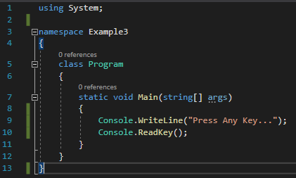
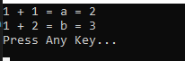

こんにちは。明月です。
この投稿はプログラミングの始めと変数と定数を使う方法に関する説明です。
C#で一つのプログラムを作成しようと思えば基本的にクラスと関数、ライブラリを知らなければならないです。
using System;
namespace Example3
{
// クラス
class Program
{
// 実行関数
static void Main(string[] args)
{
// コンソール出力
Console.WriteLine("Press Any Key...");
// 任意のキーを押してください
Console.ReadKey();
}
}
}

上のソースをVisual stuioツールを利用して作成してF5を押下してビルド及び実行すれば下記通りの結果が表示されます。
そのことで任意のキーを押下するとプログラムを終了になります。
上の例だけ確認しても基本的にnamespaceの中でProgramというクラスがあります。また、クラスの中ではMainという関数があります。Main関数にはstring[]タイプになっているパラメータがあるし、staticとvoidのキーワードで関数を定義しています。
namespaceとクラス、関数は中括弧({})でその領域を定義しているし、Main関数にはConsoleクラスのWriteLineとReadKeyの関数を使っています。
上のプログラムを開始するとコンソールで動きますが、Consoleクラスはコンソールウィンドウで作動するライブラリです。つまり、WriteLine関数はコンソールウィンドウで文字を出力する関数、ReadKeyはユーザからキーボードデータを入力値を受け取る関数です。
上の形がC#のプログラム基本形式です。
それならこれからプログラムを作成しましょう。
我々がプログラムを作成すれば一番扱うキーワードは変数と定数です。
プログラムを簡単に定義すると高性能な計算機です。つまり、1+1や1+2を計算する計算機です。
この計算機は計算した値を何処かで格納することができますが、それが変数です。
using System;
namespace Example3
{
class Program
{
// 実行関数
static void Main(string[] args)
{
// 1 + 1の値をaという変数に格納する。
int a = 1 + 1;
// 1 + 2の値をbという変数に格納する。
int b = 1 + 2;
// aという変数を出力する。
Console.WriteLine("1 + 1 = a = " + a);
// bという変数を出力する。
Console.WriteLine("1 + 2 = b = " + b);
// 任意のキーを押したら終了。
Console.WriteLine("Press Any Key...");
Console.ReadKey();
}
}
}

上の例は1+1の結果値をaという変数に格納しました。aという変数の前にはintというデータタイプキーワードを宣言しました。つまり、変数宣言はデータタープと変数名で宣言することができます。
そしてbという変数には1+2の結果値を格納しました。
また、ConsoleクラスのWriteLine関数を利用してコンソールに出力しました。ここで""のマークで書いている文字列はそのままにコンソールに出力されます。その後で+aを入れてaの変数に格納された値が出力します。
変数の値は数を計算して格納する機能をありますが、変数と変数の計算して格納することもできます。
using System;
namespace Example3
{
class Program
{
// 実行関数
static void Main(string[] args)
{
// 1 + 1の値をaという変数に格納する。
int a = 1 + 1;
// 1 + 2の値をbという変数に格納する。
int b = 1 + 2;
// a + bは2 + 3と同じ計算でcの変数には5の値が格納する。
int c = a + b;
// cの変数を出力する。
Console.WriteLine("a + b = " + c);
// 任意のキーを押したら終了。
Console.WriteLine("Press Any Key...");
Console.ReadKey();
}
}
}
予想とおりにcの値は5が出力しました。
変数は数を計算して値を格納し、その値を修正することもできます。
using System;
namespace Example3
{
class Program
{
// 実行関数
static void Main(string[] args)
{
// 変数aに2の値を格納する。
int a = 2;
// aの変数に2を足す。 - Debug - 4
a = a + 2;
// aの変数に3を掛ける。 - Debug - 12
a = a * 3;
// aの変数に4を足す。 - Debug - 16
a = a + 4;
// aの変数に2を分ける。 - Debug - 8
a = a / 2;
// コンソールに出力
Console.WriteLine("a = " + a);
// 任意のキーを押したら終了。
Console.WriteLine("Press Any Key...");
Console.ReadKey();
}
}
}
上の例みたいに最初にaの変数に2を格納して2を足して3を掛けるし、また、4を足して2を分けて計算機みたいな計算結果を作ることができます。
変数は上の例みたいにデータを格納、出力、修正することもできます。
プログラムでは格納、修正が可能な変数がありますが、最初に格納したらデータが変わらない定数ということもあります。
using System;
namespace Example3
{
class Program
{
// 実行関数
static void Main(string[] args)
{
// 定数宣言
const int a = 2;
// 2を足す。
a = a + 2;
// コンソールに出力
Console.WriteLine("a = " + a);
// 任意のキーを押したら終了。
Console.WriteLine("Press Any Key...");
Console.ReadKey();
}
}
}
上の例みたいにデータタイプ名でconstキーワードを入れると変数から定数に宣言することができます。
定数の場合は最初に2の値を格納してまた、2を足すとVisual studio側でデバッグエラーが発生します。つまり、定数の場合は最初に格納したデータを修正しようとすればエラーが発生することです。
一般的にプログラムでは普通に定数より変数をよく使います。プログラム的に変数を代わりに定数を使うことで性能があがることではありません。ただ、プログラミング的に制約するため、つまり格納したデータをミスで修正することをしないように使う文法です。
なので、一般的に定数より変数で宣言して使います。ただ、データ比較のためにコード読みやすくするように使う場合がありますね。
ここまでプログラミングの始めと変数と定数を使う方法に関する説明でした。
ご不明なところや間違いところがあればコメントしてください。
- [C#] 15. インタフェース(interface)2019/07/10 00:06:17
- [C#] 14. 抽象クラス(abstract)と抽象メソッド(abstract)、そして仮想関数(virtual)2019/07/08 23:04:09
- [C#] 13. クラスの継承と再定義(override)する方法、overrideとnewの差異2019/07/08 22:55:00
- [C#] 12. Staticとアクセス修飾子、そしてカプセル化2019/07/07 23:12:30
- [C#] 11. インスタンスう生成(new)とメモリ割り当て(StackメモリとHeapメモリ)そしてヌル(null)2019/07/07 22:54:13
- [C#] 10. クラスを作成する方法(コンストラクタ、デストラクタ)2019/07/06 00:53:17
- [C#] 9. 関数(Method)とオーバーロード、再帰呼び出し2019/07/06 00:38:29
- [C#] 8. 配列とリスト2019/07/05 00:12:42
- [C#] 7. 制御文2019/07/05 00:05:30
- [C#] 6. 演算子2019/07/04 00:09:43
- [C#] 5. データタイプ変換(キャスト:Cast)とコメント(Comment)2019/07/04 00:01:12
- [C#] 4. データタイプとリテラル(literal)、 Nullable2019/07/02 23:58:43
- [C#] 3. プログラミングの始めと変数と定数を使う方法2019/07/02 23:46:49
- [C#] 2. Visual Studioをインストールする方法2019/07/01 23:58:20
- [C#] 1. C#とは？2019/07/01 23:32:22
- [Design pattern] 1-4. デザインパターンの抽象ファクトリーパターン(Abstract factory pattern)2021/10/15 19:31:03
- [Project design] 要件定義(要求事項整理)2021/10/15 19:28:58
- [C#] 52. Reflection機能を使い方 - Variable2021/10/15 19:27:37
- [Project design] プロジェクトを工程(ウォーターフォール vs アジャイル)2021/10/14 18:36:04
- [C#] 51. Reflection機能を使い方 - Method2021/10/14 18:34:21
- [C#] 50. Reflection機能を使い方 - Class2021/10/13 18:34:13
- [C#] 49. Operator(演算子)のオーバーロードを使い方2021/10/12 18:28:42
- [C#] 48. IEnumerableとIEnumerator、そしてyieldキーワード2021/10/11 19:49:33
- [C#] 47. Nugetを使い方(外部ライブラリ)とデータベース(MariaDB(Mysql))を使い方、そしてトランザクション(Transaction)2021/10/08 18:58:57
- [Window] MariaDBをインストールする方法2021/10/08 18:56:05
- [C#] 46. データベース(MSSQL)に接続する方法2021/10/07 18:39:58
- [C#] 45. ネットワークソケット通信(Socket)を使い方2021/10/06 19:06:25
- [C#] 44. ファイル(FileInfo)とディレクトリ(DirectoryInfo)を扱い2021/10/05 19:29:34
- [C#] 43. ストリーム(Stream)とバイナリ(byte[])、エンコード(Encoding)、そしてusingを使い方とIDisposableインターフェース2021/10/04 18:33:04
- [C#] 42. ファイルを扱い(IO)とファイルメタデータ(FileInfo)を使い方2021/10/01 20:10:21